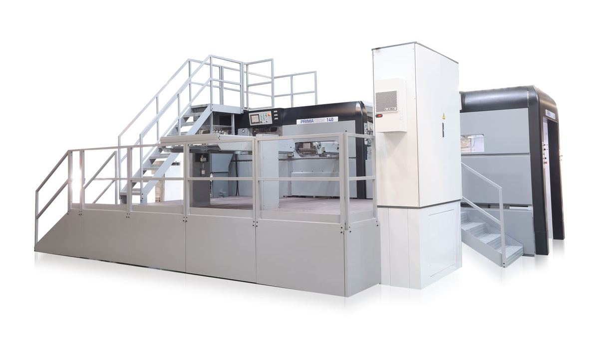

Heißprägeautomat
Primatech 140
Die Summe unserer Erfahrung: eine technologisch ausgereifte, wirtschaftliche und zuverlässige Lösung, wettbewerbsfähig bei Kleinauflagen ebenso wie bei großen Produktionsmengen.
- Max. Bogenformat
- 1100 × 1450 mm
- Prägefläche
- 1085 × 1440 mm
- Max. Druck
- 600 t
- Max. Geschwindigkeit
- 5.500 Bogen/h
- Genauigkeit
- ± 0,10 mm
- Materialien
- Papier 120 g/m² → Karton 2000 g/m², Wellpappe 4 mm
- Beheizte Platte mit 17 unabhängigen Zonen
- Zwei Touchscreen-Monitore
- Programmierbares Air Blast Plus
- Teleskopischer Folienrollenwechsel
- Online-Fernwartung